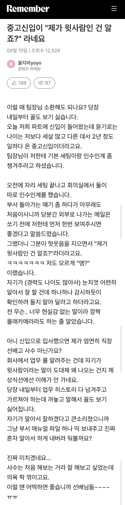

https://cafe.daum.net/truepicture/Qt7/1357229?svc=cafeapi

https://cafe.daum.net/truepicture/Qt7/1357229?svc=cafeapi

최민식 인턴 정도는 되야 중고신입이지
ㅅㅂㄻ가 2년가지고 유세를
대리입사한것도 아니고
신입입사했으면 후배지
나도 신입들 여럿 가르쳐오긴 했지만... 대부분 나이대가 내 아버지뻘 이상이라 저런식으로 나오는 경우가 많긴했음
경력은 나보다 없지만 나이는 많으니 연수때 이래라 저래라 하지말라는? 그런말들을 자주 하던데
그럴때 마다 팀장이랑 부장한테 보고하면 좋아함 ㅋㅋㅋ
신입이면 신입답게 하라 하고 경력으로 온거면 알아서 하라고 내버려 둬라
넹 하고 몇번 컨펌 받으면 어련히 알아서 “이제 확인 안 받으셔도 돼요“ 할텐데
더 위다.
참고로 중고신입이랑 경력직은 완전 다른거임
중고신입 : 사회생활을 해봤지만 이번에 들어온 회사의 직무와 연관이 없어서 경력직이 아닌 신입사원으로 들어옴
경력직 : 사회생활을 했고, 전에 다녔던 회사의 직무 경험으로 이번에 들어온 회사의 직책을 그대로 이어받아서 경력직으로 들어옴
위에글은 중고신입이 아니라 경력직 같음 다른데서 2년하고 왔고 자신보다 경력과 나이가 많다라고 쓴걸보면 글쓴이는 2년 미만 경력이고
그런 상황이면 아예 직급을 주고 입사시키던지 해야지
경력직으로 더 높은직급 받고 들어왔으면 바로 윗사람인거고
경력 인정 못받고 일개 신입사원으로 들어왔으면
나이가 몇이건 후임인건데 꼬라지보니 똥구멍좆소 경력일듯
요즘은 중고 신입이 경력이나 비슷함.
같은 또는 유사 직무인데도 중고 신입으로 들어가는 이유는 대기업이 중소, 중견 대리보다 연봉이 쎄기때문.
그럼에도 불구하고 경력으로 들어간거 아니면 저따구 자세로 나가면 안되는거 맞음.
되려 경력이어도 저따구로 행동하는 경우는 없고.
회사 시스템 모르면 좆되는건 자기인데 아무래도 주작인거 같음.
사회생활 해봤으면 저렇게 안함.
같은 직급 줬다고 신입으로 생각하는 걸수도 있음
저러면 이제
아 그렇구나 ~ 그럼 이건 다 아시니까 따로 안알려드려도 되죠? 라고 하고 손떼야지 ㅋㅋ
저런 병신들은 도대체 사회성이 얼마나 씹창나서 저런 개소리를 씨부리는거지?
??: 어 자네가 주임원사인가? 계급은 내가 높으니 앞으로 경례 잘하게
좆병신이 왔네 ㅋㅋㅋ
근데 사원이 다른사원 검열하는거 뭔가 이상한데..
걍 작성자가 착각하고 있는거 아님? 갓 입사했다고 중고신입으로
팀장급한테 검열받던 버릇대로 자기가 팀장인 마냥 구는 상황같은데
사수 없다니까 경력도 없는 수준일거같고
회사이름으로 나가는건데 당연히 선임이 초반에 체크하고 나가야 되는거 아냐? 회사일 알려주는데 팀장급이고 말고가 중요하냐?
너는 결재라인 타면서 참조 협조 한번도 안걸어봤어..?
그나이 드시고도 아직까지 똥된장 구분 못하세요?
우린 사번으로 구분하기 땜시 ㅎㅎ
남자아닐듯
경력이 확실히 더 높으면, 같은 직급이고 늦게 들어왔어도 선배 대접 받을 수도 있긴 함.
근데, 저건 이미 그 선을 넘어간거 같은데 ㅋㅋㅋㅋㅋ
회사 다니면서 느낀게, 자아가 쓸데없이 비대한거는 본인에게나 주변인에게나 진짜 비극이다 ㅠㅠㅋㅋㅋㅋㅋ
개주작
고작 2년이면 사원따리 주제에 싹이 글러먹었네
걍 아 그래요? 하고 상사한테 보고 하면 됨
그럼 상사가 서열정리 해준대로 하면 되고
저 사람을 신입으로 보는거면 교육하는 사람에게 힘을 줄거고
저 사람을 경력직으로 보면 상사가 데려다가 가르치는게 맞음
그 얘기 듣자마자 말하거나 상사에게 보고해야지
이미 먹힌거같은데
ㅋㅋㅋㅋㅋㅋㅋㅋ아 그러시구나 하고는 팀장 한테 얘기하고 손때면 됨 ㅋㅋㅋㅋㅋㅋㅋㅋㅋㅋ
ㅋㅋ좆밥새끼가 깝치기는
전직장에 이런 사람 있었음
물론 내가 당사는 아니였고 밑에 대리가
새로온 과장이랑 이런 케이스
얼마나 쓰니가 성격이 ㅈㄹ 같았음 저럴까 라고 해야지
이런년들이 신입이라고 폐급짓 다하더라
존나재밌겠다
저런 신입 들어오면 회사다닐맛 나겠는데
병신짓 구경할 생각에 하루하루가 즐거울듯
요거 요거 맥일 방법이 머릿속에서 계속 샘솟는 걸 ㅋㅋㅋㅋ
와 내 전직장 저런새끼 있었음 개 암덩어리 다른 파트 대리랑 싸워가지고 퇴사당함
걍 직장인 포르노임
진짜 경력직이면 알아도 나 몰라요 응애 해주세요 하면서 책임에서 벗어나지…ㅋㅋㅋ 뭐할려고 발벗고 일 사서 하냐
주작 말이안됨
경력도 좆도 아무것도 아닌 새기가 신입으로 들어와서 지 나이 많다고 나대는 경우도 있는데 뭐 ㅋㅋ
경력 비경력을 떠나서
메일 하나하나 검토하겠다는건 정상이 아니긴함
진짜 생신입한테도 안할짓이라;
딴데서 처먹은 짬을 왜 여기와서 대접받으려 하는지 ㅋㅋ
개븅신들 존나 많음
유학끝나고 한국 들어온 중령 vs 말년 준위 맞다이 실제로 본 입장에선 충분히 있을 수 있을거같음 ㅋㅋㅋ
중령이 주제파악못하고 준위한테 자기가 상관이라고 쿠사리 존나주고 깝치다가
준위 전화 몇통 돌리니까 단장-대령이 뛰어와서 줘패더라 ㅋㅋㅋㅋㅋ
신입이면 신입이지 ㅅㅂㅋㅋㅋ
진짜 능력자면 직책부터 윗등급으로 들어왔겠지
ㅋㅋㅋㅋㅋㅋㅋㅋㅋㅋ
벙슨ㅋ
2년 경력이면 신입이나 다름 없음
이런거떄문에 그냥 직급없애는거아냐 ㅋㅋ